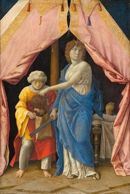

THỜI KỲ PHỤC HƯNG SƠ KHAI
Soeur Wendy Beckett
THỜI KỲ PHỤC HƯNG SƠ KHAI
Từ "Phục hưng" dùng chỉ một thời kỳ canh tân văn hóa trải dài 3 thế
kỷ. Khái niệm phục hưng có mặt trong tất cả những công trình của
thời kỳ này: nghệ sĩ, bác học, nhà khoa học, triết gia, nhà kiến
trúc và nhà cầm quyền đều tin rằng chỉ có sự nghiên cứu thời đại
hoàng kim Hy La cổ đại mới có thể đưa con người tới sự vĩ đại và
hiểu biết. Họ uất bỏ một quả khứ Trung cổ gần gũi hơn, cái quá khứ
đã sinh ra thời kỳ gothic, và được chủ nghĩa nhân văn khuyến khích,
họ thích trở lại với truyền thống văn học và triết học, và những
sáng tạo nghệ thuật và kỹ thuật của Hy La cổ đại hơn.
Hội họa Phục hưng ra đời ở Ý vào cuối thế kỷ 13, và ảnh hưởng của nó
lan tràn nhanh chóng khắp châu Âu, đạt tới cực điểm vào cuối thế kỷ
15. Các nghệ sĩ thời Phục hưng muốn làm người thừa kế của truyền
thống Hy La cổ đại; khái niệm này là do Giotto mà ra. Do tinh thần
"hùng vĩ" của dự kiến, Giotto thuộc về thời kỳ gothic, nhưng ý thức
của ông về tính hiện thực và hình thể dày đặc của ông đã báo trước
phong trào Phục hưng. Giotto đã chỉ ra làm thế nào thị kiến nghệ
thuật có thể bao hàm chủ nghĩa nhân văn mới mẻ và cả chủ nghĩa cổ
điển, cả hai sẽ có ảnh hưởng quan trọng ghê gớm đối với nghệ sĩ thời
Phục hưng. Lấy thời Thượng Cổ làm mẫu mực và Giotto làm người hướng
dẫn, nghệ sĩ ở đầu thời kỳ Phục hưng ở Ý bước vào giai đoạn hội họa
mới, lấy cuộc sống thực tế của con người làm cơ sở.
MASACCIO VÀ FLORENCE
Hiển nhiên là bước chuyển từ thời kỳ gothic qua thời kỳ Phục hưng
không phải diễn ra một sớm một chiều. Tuy nhiên, người ta có thể
ngạc nhiên khi nhận ra rằng họa sĩ vĩ đại người Ý đầu tiên theo bước
Giotto (mất năm 1837) chỉ ra đời vào năm 1401 và chỉ bắt đầu vẽ
khoảng một thế kỷ sau khi Giotto mất. Sự gián đoạn đó được giải
thích bằng trận dịch đen tràn vào nước Ý năm 1347 rồi lan khắp châu
Âu trong bốn năm sau đó. Hậu quả của trận dịch đó rất lớn, và ngoài
tổn thất quan trọng về nhân mạng, xã hội Trung cổ còn chịu nhiều
thay đổi lớn lao. Cuộc cách mạng nghệ thuật ở Hà Lan đưa hội họa tới
nhiều hướng mới: chủ nghĩa tự nhiên ngày càng lớn mạnh, chủ đề phàm
tục và sự nắm vững kỹ thuật. Ở miền Nam, người ta có vẻ không biết
tới Giotto. Nhưng một nguồn suối mới đã sinh ra như có phép lạ: sự
ra đời của họa sĩ Florence, Tommaso di Ser Giovanni, tức Masaccio
(1401-1428), nhà sáng lập cách mạng của nền hội họa thời Phục hưng.
Trong số các họa sĩ Ý, ông là người duy nhất thật sự hiểu những gì
Giotto đã khởi sự và làm cho những người theo sau ông hiểu được điều
đó.
Masaccio, chết năm 27 tuổi, đã sống mãi như một người trẻ trung,
nhưng nghệ thuật của ông phản ánh một sự trưởng thành đáng kinh
ngạc. Tên ông là một biệt danh, có nghĩa là "sự cẩu thả trong bố
trí" (theo Vasari), và nghệ thuật của ông có lẽ cũng cho thấy khuynh
hướng đó. Nhưng sự vô trật tự đó là sự vô trật tự của thiên tài,
vững vàng và thuyết phục, người thừa kế chân chính của chủ nghĩa
nhân văn và độ sâu không gian của Giotto. Một trong các tác phẩm đầu
tiên của ông, thực hiện cho nhà thờ Pisa, cho thấy sự cô đọng gần
với thuật kiến trúc. Bức Đức Mẹ Đồng trinh và Chúa Hài Đồng ngồi
trên ngai với các thiên thần, tấm giữa của một bức tranh nhiều tấm
ngày nay đã thất lạc, cho thấy Đức Mẹ có hình thức như điêu khắc
trong dáng điệu uy nghi đoan chính, ngồi trên ngai kiểu cổ, hoàn
toàn không có cái vẻ uy nghi như tranh Byzance. Chúa Hài Đồng là một
hài nhi thực sự đang mút ngón tay cái và ánh mắt xa vắng, biểu hiện
sự đối nghịch với sự tinh tế thanh lịch của phong cách gothic quốc
tế, như của Gentile da Fabriano chẳng hạn. Thế nhưng, tính chất
thống thiết, thay vì biến mất, lại còn đậm đà hơn. Sức mạnh pha lẫn
với nhược điểm, và cả các thiên thần nhạc công mặc dầu có vẻ nghiêm
trang vẫn giữ được nét mặt tròn trình của tuổi thơ.
ẢNH HƯỚNG CỦA ĐIỀU KHẮC
Như Giotto đã chịu ảnh hưởng tượng điêu khắc của Pisano, Masaccio
cũng chịu ảnh hưởng tượng điêu khắc của những người thừa kế Pisano ở
Florence: Donato di Niccolò di Betto Bardi, tức Donatella (khoảng
1386-1466) và Lorenzo Ghiberti (1378-1455). Nhấn mạnh ảnh hưởng của
điêu khắc đối với hội họa ở đầu thời kỳ Phục hưng và đối với sự phát
triển của truyền thống hội họa Tây phương không phải là thừa. Quan
niệm của Masaccio về hình thể ba chiều, về không gian kiến trúc và
về phép phối cảnh có được là nhờ rất nhiều vào những công trình kỹ
thuật và khoa học của Donatello, Ghiberti và Filippo di Ser
Brunellesco, tức Brunelleschi (1377-1446). Trong hội họa thời Phục
hưng, người ta thấy được chủ nghĩa hiện thực trong điêu khắc, nó đạt
tới đỉnh cao nhất với nghệ thuật hoành tráng như anh hùng ca của
Michel Ange, vào lúc cực thịnh của thời Phục hưng.
Masaccio, Adam và Eva (Expulsion from the Garden of Eden), khoảng
năm 1426 - 1428 208 x 88 cm Florence, Ý
Như Giotto đã thể hiện những bức tượng của Pisano dưới dạng tranh
vẽ, Masaccio, lấy cảm hứng từ những bức tượng và phù điêu của
Donatello, đã áp dụng kỹ thuật điêu khắc vào tranh của mình khi tạo
ra những hình ảnh ba chiều trong một không gian thực, với một phối
cảnh thuần thục. Hơn thế nữa, ông còn mượn của Donatello cách sử
dụng tác dụng của ánh sáng tự nhiên, và như vậy đã vượt qua được
bước tiến lớn lao mà Giotto đã thực hiện được trong việc tìm hiểu
cách tái tạo thế giới qua hội họa Masaccio sống trong một thế giới
hết sức trang nghiêm. Adam và Eva bị đuổi khỏi thiên đường (hình 11)
than khóc trong sự khiếp sợ không giả dối chút nào, mù quáng vì đau
đớn, dửng dưng với tất cả cái gì không dính dáng tới việc đánh mất
hạnh phúc của họ. Eve gào khóc vì tuyệt vọng trở nên hết sức xấu xí
vì âu sầu, đến nối tạo cho chúng ta một sự thương hại mê muội.
BỨC BÍCH HỌA "BA NGÔI"
Masaccio khác hơn người do ở bút pháp uy nghiêm. Chưa bao giờ có họa
sĩ nào đường bệ hơn, đầy phẩm cách hơn, cao cả hơn, song le, vấn có
nhân tính hơn. Bức tranh Chúa Ba Ngôi đáng chú ý ở chỗ trình bày sáu
nhân vật đầy nhân tính. Ở giữa, Đức Chúa Cha và Đức Chúa Con. Mặc
dầu các nhân vật này rất người (một Jésus hấp hối, rất thực, đau khổ
và đầy lòng thương xót anh em của mình, và một Người cha cũng rất
thực, với sự uy nghiêm đường bệ, hiến dâng Con mình lên thánh giá),
chúng ta biết rằng đó là các thần linh. Thần tính là một bí nhiệm mà
theo định nghĩa, chúng ta không thể hiểu được, nhưng Masaccio đã làm
cho bí nhiệm Ba ngôi trở thành dễ hiểu. Phía dưới trực thẳng ở giữa
là bốn nhân vật phàm tục. Chỉ mình Đức Mị Marie hướng cái nhìn về
phía chúng ta. Để cần bằng, phía bên kia thánh giá Thánh Jean nhìn
Chúa cứu thế chứ không nhìn người xem.
Phía dưới nữa là những người cung tiến, họ rất thực. Thấp hơn nữa có
một nhân vật thứ bảy, bộ xương tượng trưng Adam và toàn thể nhân
loại, chân lý duy nhất phía sau mọi tín điều tôn giáo. Trên vách đá
phía trên bộ xương, ta có thể dọc thấy câu: "Tôi đã là người như bạn
và bạn sẽ là bộ xương như tôi." Tính chất phổ biến của bức tranh "Ba
Ngôi" của Masaccio vừa nhắc nhở chúng ta tính chất tạm bợ của cuộc
đời và sự cứu rỗi tinh thần, thuộc về truyền thống Trung cổ.
Ta nhận thấy một uy lực vô biên ở nghệ sĩ trẻ tuổi này. Bức Thánh
Pierre chữa bệnh bằng bóng của mình là một trong hai cảnh của bộ
tranh ở nhà thờ Brancacci. Thánh Pierre đi thằng tới người xem,
trong một con đường hẹp hai bên có nhà theo kiểu Florence. Một trong
những người đứng quanh đó mặc áo ngắn của thợ dục đá, có lẽ là chân
dung của Donatello. Một người khác trẻ hơn, chưa mọc râu, có thể là
chân dung tự họa của Masaccio (theo kiểu chân dung tự họa thời đó,
ông nhìn thẳng người xem). Kỹ thuật vẽ bóng còn chưa có ở thời đó,
nhưng Masaccio đã biết cách vẽ bóng của thánh Pierre với sự tự tin
lớn. Những người tàn tật được thể hiện với một sức sống và vẻ chân
thực đáng ngạc nhiên đi trước thời đại đối với đầu thế kỷ 15.
Sự quan tâm của Masaccio tới tính xác thực khiến nhà viết lịch sử
nghệ thuật Vasari phải tán thưởng: "Trong lĩnh vực hội họa, chúng ta
mang ơn Masaccio rất nhiều: ông là người đầu tiên vẽ các nhân vật
hai chân bám chặt trên mặt đất, do đó loại bỏ được sự vụng về phố
biến của tất cả các họa sĩ đi trước ông do vị trí của những hình
diện trên đầu ngón chân. Chúng ta cũng phải cảm ơn ông đã cho nhân
vật của mình sự sống động và nổi bật đến nỗi ông có thể tự mình phát
minh Nghệ thuật."
MASOLINO, "TOMMASO NHỎ"
Người ta sẽ nhận thức được sự vĩ đại của Masaccio hơn, nếu so sánh
ông với Tommaso di Cristoforo Fini, tức Masolino (1383- 1447), người
lớn hơn ông gần hai mươi tuổi mà ông thường cộng tác. (Người ta nói
rằng "Masolino), cũng là một biệt hiệu, hần là để phân biệt hai
người: "Tommaso Lớn" là Masaccio, và "Tommaso Nhỏ" là Masolino). Coi
ông là nhỏ thì không đúng, mà đó là chỉ để so sánh. Khi ông vẽ một
mình thì, do bản chất, ông vẫn còn thuộc về thời kỳ gothic, như
chúng ta thấy trong bức Truyền tin dễ thương của ông, trong đó ông
tỏ ra ưa chuộng những đường trang trí mềm mại, tao nhã của phong
cách gothic chân chính. Nhưng khi cộng tác với "Tommaso Lớn" thì
Masolino lại ở giữa dòng chảy Phục hung.
Ta có thể nhận ra sự tiến bộ của Masolino khi so sánh hai bức tranh
trên gỗ Thánh Jérôme và Thánh Jean Baptiste và Thánh Libère và Thánh
Matthias. Tầm vóc và tính chất tạo hình của hình dạng các nhân vật
là tiêu biểu nơi Masolino (chân của nhân vật đặt vững vàng trên mặt
đất). Tuy nhiên, ngày nay người ta xác định là phần lớn bức tranh
thứ nhất do Masaccio vẽ, còn bức thứ nhì là của Masolino. Trước kia
cả hai bức được gán cho Masaccio.
NHÀ CẢI CÁCH DOMENICO
Domenico di Bartolomeo di Venezia, tức Domenico Veneziano (khoảng
1400-1461), người Venise, là một trong những họa sì quan trọng nhất
hoạt động ở Florence vào đầu thời kỳ Phục hưng. Ảnh hưởng của ông
còn quan trọng hơn chính tác phẩm của ông vì ông là thầy của Piero
della Francesca.
Sự hài hòa và ánh sáng độc đáo trong phong cách nghệ thuật
Domenico Veneziano (Ảnh Chat GPT)
Tài năng của họa sĩ này chủ yếu là ở tính chất tuyệt vời của ánh
sáng. Ánh sáng đó tỏa ra từ một nguồn duy nhất, làm cho không gian
sống động và tràn ngập các hình thể đang tan hòa trong sự hài hòa
hoàn hảo. Ông hiến cho chúng ta cảnh quan tuyệt diệu hạng nhất như
dòng suối bạc, món quà của Venise cho thế giới thị giác. Nghệ thuật
của Domenico cũng vô cùng độc đáo. Chúng ta thán phục Masaccio vĩ
đại là có lý do, và chúng ta yêu mến Domenico trong sáng. Bức Thánh
Jean ở sa mạc của ông là một tác phẩm thần kỳ. Ánh sáng tràn ra chói
lọi trên một phong cảnh khô cần, điểm dịu dàng duy nhất là Thánh
Jean trần trụi. Ông trút bỏ quần áo trần gian, như một lực sĩ chuẩn
bị chạy thi. Cuộc thi hiển hiện trong trí ông, và ông biết rằng đó
là một cuộc đọ sức tinh thần. Mặc dầu thiên triệu mà ông tuân theo
đòi hỏi ông rất nhiều, nhưng ông hoan hi chấp nhận.
Giữa hình ảnh con người khỏa thân cổ điển này, vòng hào quang rực rỡ
theo kiểu Trung cổ và phong cảnh xung quanh, với những hồi ức về
Flandre và cả Byzance, có một quan hệ lạ lùng; và sự khăng khít đó
minh họa sự gặp gỡ của các thế giới tinh thần, phàm tục và vật chất.
Cách hình dung lịch sử này là cách Phục hưng rất mực, như chúng ta
có thể thấy khi so sánh tác phẩm này với tác phẩm của Giovanni di
Paolo (khoảng 1408-1483) về cùng một chủ đề, Thánh Jean đi vào sa
mạc, một giấc mơ xưa cũ và quyến rũ theo kiểu gothic, trong đó vị
thánh trẻ dường như đi tìm chuyện phiêu lưu, đi tìm hạnh phúc ở cõi
trời.
PHÉP PHỐI CẢNH: KHOA HỌC TRONG NGHỆ THUẬT
Trong các khái niệm thời Phục hưng, cái thu hút họa sĩ người
Florence Paolo Uccello tức Paolo di Dono (1397-1475) hơn hết là phép
phối cảnh. Biệt hiệu của họa sĩ này có nghĩa là "Chim" vì ông rất
yêu chim. Điều đáng ghi nhận là ông đã làm việc ở xưởng của nhà kiến
trúc Ghiberti khi mới vào nghề.
Theo Vasari, có khi Uccello nghiên cứu suốt đêm các khoa cho phép
sắp đặt trật tự trong sự vô trật tự của thế giới. Như vợ ông thuật
lại, một hôm Uccello kêu to, phán khởi: "Ôi, phép phối cảnh mới vì
đại làm sao!" Ông miệt mài nghiên cứu với một sự say mè có thể tạo
được một nghệ thuật vững chắc hơn.
Nói một cách đơn giản, nghệ thuật phối cảnh là thể hiện hình khối
của các vật và của không gian ba chiều theo sự nhìn thấy của chúng
ta (và trái với hình thức thể hiện thuần túy tượng trưng hay có tính
trang trí). Chúng ta nhìn thấy thế giới theo luật phối cảnh, các vật
có vẻ nhỏ hơn khi chúng đi ra xa. Tường của một hành lang hay một
con đường hai bên trồng cây, dường như hội tụ ở phía xa. Các quy tắc
của luật phối cảnh đặt trên cơ sở những đường hội tụ gặp nhau ở một
điểm tụ cố định và duy nhất, có thể nhìn thấy được - như khi con
đường trồng cây hai bên kéo dài tới đường chân trời - hoặc tưởng
tượng như khi các đường hội tụ của một căn phòng tiếp tục kéo dài
qua khỏi bức tường xa nhất, dĩ nhiên là chỉ trong trí tưởng tượng
của ta.
Bức Cuộc săn một trong những tác phẩm quan trọng nhất của Uccello,
cho thấy sự say mê của ông đối với phép phối cảnh. Toàn bộ bố cục
được tổ chức theo một con hươu đang chạy ở đàng xa, gần như không
thấy được: đó là "điểm tụ". Những người đi săn được vẽ với màu sáng,
ngựa, chó, người lùa con mồi, chạy theo mọi hướng giữa các thân cây
thanh mảnh trong một khu cây cối tối om. Tuy nhiên, sự hoạt động náo
nhiệt đó được tổ chức một cách hoàn hảo và hợp lý. Trong toàn bộ bức
tranh, chúng ta cảm thấy sự vững vàng và cái thi vị của Uccello.
Trước Uccello, Brunelleschi, nhà kiến trúc mái vòm có tính cách mạng
của nhà thờ Florence, đã chứng minh vào năm 1413 rằng phép phối cảnh
tuyến tính là một phần của khái niệm kiến trúc. Tuy nhiên, chính
Leon Battista Alberti là người đầu tiên áp dụng phối cảnh vào hội
họa. Quyển "Về hội họa" của ông có ảnh hưởng rất lớn (mặc dầu không
thể chứng minh điều này) đối với các họa sĩ đương thời. Nhưng không
phải vì thế mà những nghệ sĩ đi sau Uccello, Brunelleschi và nhất là
Alberti, không ý thức được tiềm năng của nhân tố mới đáng chú ý nấy.
NGHỆ THUẬT THIÊNG LIÊNG CỦA SƯ HUYNH ANGELICO
Giovanni di Fiesole tức Tu sĩ Angelico (1400-1455) cũng vẽ cùng một
thời với Masaccio. Tranh của ông cho thấy nhiệt tình tôn giáo với
các sắc độ sáng rực rỡ, nhưng không phải lúc nào người ta cũng thấy
ông là một nhà thí nghiệm táo bạo, không phải ở chủ đề mà ở bút
pháp, mà thật ra ông là người như thế.
Sư huynh Angelico, mặc dầu tên ông hàm ẩn những phẩm chất thần
thánh, không vì thế mà kém chất nhân bản; ông là một người quan tâm
tới tính thực tại của thế giới vật chất. Trong bức Trảm hình (Sự
tích các thánh Cosme và Damien) ông không để cho một vấn đề nào
không có giải đáp. Cảnh tượng lung linh vì màu sắc mạnh mẽ, mỗi hình
thể và mỗi toàn sắc đẫm mình trong ánh sáng gay gắt của một sáng mùa
hè. Phong cảnh được vẽ với chi tiết tỉ mỉ, từ những tháp trắng với
đường viền rõ nét tới những cây bách sẫm đen trước các ngọn đồi. Hai
vị thánh chờ đợi, mắt bị bịt kín không còn thấy cảnh tượng ghê rợn
và ánh sáng nữa, và ba nhân vật đã bị chém đầu nằm trong vũng máu
đào, mỗi cái đầu lăn lóc trên cỏ vẫn còn vầng hào quang. Đó là hình
ảnh một cái chết rất thực, không cần viện tới kịch tính, mà được
nhìn với sự thanh thản của đức tin không lay chuyển.
Bức Đức Mẹ Đồng trinh với Chúa Hài Đồng và các thánh có thể có vẻ
đẹp nhưng có tính ước lệ với những đường uốn lượn thanh nhã và màu
sắc mạnh, lấy cảm hứng trực tiếp từ phong cách gothic. Nhưng phân
tích sâu hơn sẽ thấy rằng sư huynh Angelico có ý thức đầy đủ về
những tiến bộ của hội họa, nói riêng là về phép phối cảnh và cách sử
dụng ánh sáng. Hơn nữa, ảnh hưởng của môn kiến trúc đối với cách thể
hiện không gian vật chất của ông rất mạnh mẽ. Tác phẩm trình bày một
giản đồ truyền thống rõ rệt với các nhân vật bố trí kỹ lưỡng tương
đối với nhau, nhưng cũng cho thấy một tính chất dứt khoát là kém
phần ước lệ, trong bản vẽ sơ khởi những thú vật của tấm thảm và bức
tranh Đóng đinh nhỏ dựng ở giữa. Chúng ta che bớt hình ảnh chúa hấp
hối để thử đoán ý nghĩa của tấm thảm mà vô hiệu. Phía sau các vị
thánh đầy vẻ tôn kính, chúng ta thấy ánh sáng lung linh trên một
phong cảnh được vẽ theo phong cách tự nhiên, vương vấn trên ngọn
cây, ve vuốt cành lá và len lỏi qua các thân cây để soi sáng một
vùng đất phía xa xa.
CÁI THIÊNG LIÊNG VÀ CÁI PHÀM TỤC
Sư huynh Angelico là một tu sĩ mẫu mực, trái ngược với Sư huynh
Filippo Lippi (khoảng 1406-1469). Sư huynh Giovanni da Fiesole gia
nhập dòng Thánh Dominique năm 20 tuổi, mọi người đều gọi ông là "Sư
huynh thánh thiện" (Fra Angelico). Ông được tuyên phúc năm 1983. Còn
cậu bé mồ côi Filippo Lippi thì được các tu sĩ ở Florence nuôi dạy.
Cậu rời tu viện sớm và sống cuộc đời phóng đăng. Câu chuyện kết thúc
có hậu, vì cậu gặp một người đàn bà mà cậu yêu tha thiết (sự thật,
đó là một nữ tu bị ép buộc vào tu viện); cả hai được giải lời thể và
được cho phép kết hôn.
Bức tranh của Lippi vẽ Đức Mẹ Đồng trinh và Chúa Hài Đồng giữa thánh
Frediano, thánh Augustin và các thiên thần có thể so sánh với bức
tranh của Fra Angelico. Lippi vẽ bức tranh này vài năm sau khi
Masaccio thực hiện các bích họa của nhà thờ Brancacci ở Florence;
những bích họa này có ảnh hưởng vô cùng lớn lao với tác phẩm của
Lippi. Những hình diện đầy đặn và đường bệ mà Lippie vay mượn của
Masaccio đã được làm dịu dàng bằng sự thanh nhã và mềm mại mà người
ta thường gặp trong tranh của Fra Angelico, và vẻ thanh thản kỳ bí
trong những tác phẩm sau cùng của ông cho thấy ảnh hưởng của trường
phái Flandre bắt đầu lan tràn vào nước Ý.
Đức Mẹ Đồng trinh của Lippi có một dáng vẻ thực tế, như một bức
tượng và nghiêm khắc mặc dầu đầy đặn, và Chúa Hài Đồng má phinh
phính ném một cái nhìn không nhã nhặn lắm cho Thánh Frediano đang
quỳ trước mặt. Các thiên thần quây quần trong khung cảnh đầy ánh
sáng cũng có vẻ thật gần như sờ thấy được. Bố cục dày đặc. Tuy
nhiên, khi cảnh tượng ít nhân vật hơn thì hiếm có họa sĩ nào làm
chúng ta xúc động hơn Filippo Lippi.
Bức Truyền tin của ông là một tác phẩm tinh tế, trong đó những nếp
áo được thể hiện rất tuyệt diệu. Sự dịu dàng của người thiếu nữ hiền
hậu và trong trắng cũng thấy có trong nét mặt của thiên sứ. Bức
tranh này có lẽ để trang trí trong phòng của một nhân vật quý tộc,
có lẽ Cosme de Médicis, người bảo trợ Lippi. Huy hiệu của gia đình
Medicis - ba cọng lông chim trong một chiếc nhẫn kim cương - được
khắc trên viên đá làm đế cho chậu hoa huệ; trong bức họa Bảy vị
thánh kèm theo, tất cả các vị thánh đều có "liên hệ" với gia đình
Medicis, tên của họ là tên những người đàn ông trong gia đình. Bảy
vị thánh ngồi mơ màng trên một chiếc băng dài bằng cẩm thạch trong
vườn, riêng có Thánh Pierre có vẻ ủ rũ.
Trong tranh của Filippo, các vị thánh luôn luôn có vẻ sung sướng.
Chính con trai của họa sĩ thường ngồi làm mẫu cho ông vẽ Chúa Hài
Đồng. Con ông sau này cũng trở thành họa sĩ và thừa hưởng nét đặc
trưng đó. Nhưng Filippino Lippi (1457-1504), mồ côi năm 14 tuổi, vào
làm việc trong xưởng vẽ của Botticelli và họa sĩ này cũng là học trò
của Lippi Cha. Tranh của Filipino cũng cho thấy sự tìm kiếm cách
diễn tả gương mặt như cha, nhưng có cái vẻ buồn thảm do ý thức sự
mỏng manh của đời người, đó là nét đặc trưng của Botticelli. Bức
Tobie và thiên thần là một bức tranh xúc động, rất thanh tao, nhẹ
nhàng, huyền ảo.
BOTTICELLI: SỰ CHÍNH XÁC TRỮ TÌNH
Sau Masaccio, Sandro di Mariano Filipepi tức Botticelli (1441-1510
chắc chắn là họa sĩ vĩ đại nhất của truyền thống Florence. Tài năng
của các anh em Pollaiolo, vừa là họa sĩ vừa là thợ kim hoàn, thợ
chạm, nhà điêu khắc và vẽ kiểu thêu, chắc chắn có ảnh hưởng đối với
những hình thể mới mẻ có giới hạn rõ ràng và những đường nét thanh
mánh, uyển chuyển và dịu dàng; những nét đặc trưng của Botticelli.
Theo Vasari, Antonio Pollaiolo là một trong những nghệ sĩ đầu tiên
thực hiện việc mổ xẻ tử thi con người để nghiên cứu cấu trúc bên
trong. Bức tranh Sự tuần giáo của Thánh Sébastien cho thấy rõ ràng
kết quả của việc nghiên cứu đó. Tuy nhiên, bút pháp cứng nhắc và sự
quan tâm thể hiện mặt cơ thể học của Pollaiolo ít có gì giống với
tranh của Botticelli. Botticelli không bao giờ để cho sự hiểu biết
về luật phối cảnh và cơ thể học cũng như những cuộc tranh luận của
các nhà nhân văn ở triều đình Medicis lấn át nhãn quan thì vị của
mình. Không còn gì say mê hơn, trữ tình hơn những bức tranh đầy tính
phúng dụ của Botticelli, như Mùa Xuân và Venus ra đời, trong đó
truyền thuyết đa thần được thể hiện với một thái độ kính cẩn và
Vénus thì có vẻ gần gũi với Đức Mẹ Đồng trinh. Điều lý thú là ý
nghĩa phúng dụ của bức tranh Mùa Xuân đã làm nảy ra nhiều cuộc tranh
luận, giả thuyết hấp dẫn nhất vẫn là con đường hướng thượng và thăng
hoa chậm chạp từ tình yêu nhục dục tới sự quan chiêm và hiểu biết.
Botticelli sáng tạo lại sự dịu dàng tươi mát của một buổi sáng mùa
xuân, ánh sáng trong suốt xuyên qua những cây lớn vươn cao nặng trĩu
quả vàng óng - đó là những trái cam hay có lẽ là những trái táo
huyền thoại trong vườn của ba nàng Hespérides, con gái của thần
Atlas.
Ở bên phải là Zephyr, thần gió xuân mát mẻ, đưa tay ôm Flore, nữ
thần La Mã, hay có thể là Chloris, nữ thần Hoa của Hy Lạp, mặc áo
trong suốt đang chạy trốn. Botticelli thể hiện lúc nàng hóa thân
thành nữ thần Flore, hơi thở của nàng biến thành hoa nở khắp cánh
đồng. Bên cạnh là Flore (hay có thể là Persephone, nữ thần Thảo mộc,
sống nửa năm dưới lòng đất) được thể hiện với tất cả sự huy hoàng, y
phục toàn là hoa. Vénus đứng ở giữa, dịu dàng và suy tự, với tất cả
phẩm cách trang nghiêm và sự hoan lạc tinh thần; phía trên nàng,
Cupid đang giương cung. Ở bên trái, ba nàng Thanh Tao nhảy múa trong
sự im lặng mơ màng, cách biệt với các hình diện khác về mặt thời
gian, như luồng gió bấc thổi ngược về phía Zéphir làm lay động mái
tóc và tà áo mỏng của các nàng. Ở phía đối diện với Zéphir là
Mercure, sứ giả của các thần. Thời tiết vừa ra khỏi mùa đông, Zéphir
thổi làn gió ấm tình yêu, đánh thức vạn vật; còn Mercure mang hy
vọng của nhân loại báo cho các thần linh.
Tất cả tôn vinh sự sống trong cái thế giới diệu kỳ mà dễ thương tổn
này. Cupidon bị bịt kín hai mắt, và ba nàng Thanh Tao cô lập trong
sự hoan hỉ của mình. Như vậy, cái thi vị cũng cho thấy một nỗi buồn
ẩn kín, một thứ nuối tiếc đăm chiêu cho một giấc mộng không thể đạt
tới được mà chúng ta dầu sao cũng gắn bó. Ngay màu sắc dịu dàng mà
mạnh mẽ cũng khêu gợi tính cách hai chiều đó. Các hình diện sống
động với một nhịp điệu chậm chạp có một vẻ sống thực không thể chối
cãi, gần như sờ thấy được, thế mà vấn có vẻ hư ảo, có vẻ là hình ảnh
thoáng qua của một cái gì có thể hiện hữu hơn là hình ảnh của thực
tại.
Giấc mơ đó, nỗi buồn khó nắm bắt đó, còn rõ ràng hơn trong gương mặt
tuyệt vời của Vénus được những luồng gió đẩy cho giạt vào bờ. Một nữ
thần mùa đợi sẵn trên bờ, dưa cho nàng một chiếc áo choàng lộng lẫy
để che bớt tấm thân tuyệt mỹ của nàng. Bức tranh Venus ra đời muốn
nói chúng ta không thể chiêm ngưỡng tình yêu trong sự trần truồng
của nó, chúng ta quá yếu đuối và có lẽ quá hư hỏng nên không thể
chịu đựng nỗi cái đẹp. Botticelli tin rằng tín ngưỡng đa thần cũng
có thể là một tôn giáo theo nghĩa triết học. Tranh về tôn giáo của
ông thể hiện lòng tin tưởng đó bằng cách kết hợp mọi chân lý vào một
chân lý duy nhất.
Họa sĩ này có vẻ đặc biệt thích sự tích Ba Vua chiêm ngưỡng Chúa Hài
Đồng, và đặt câu chuyện vào một cảnh hoang phế cổ, phương pháp khá
phổ biến ở thời Phục hưng, hàm ý rằng Chúa giáng sinh là đáp ứng sự
mong đợi của mỗi người, một sự công nhận những điều đã thực hiện
trong quá khứ.
Không có họa sĩ nào khác đã cảm xúc mạnh mẽ như Botticelli. Chúng ta
cảm thấy là ông hết sức cần tối sự trợ lực siêu hình đó, và sức mạnh
được thể hiện bằng hình ảnh của hành vi sùng đạo ngưng đọng ở hình
diện trung tâm là Đức Mẹ và Chúa Hài Đồng đó tương ứng với nội tâm
sôi động của ông. Cả những ngọn đồi ở xa xa cũng được lôi cuốn về
với Chúa Cứu Thế.
Botticelli không phải là họa sĩ Florence duy nhất được ban cho (hay
phải gánh chịu) một tính khí ưu tư như vậy. Khoảng năm 1490, thành
phố Florence bị xáo trộn vì một cuộc khủng hoảng chính trị. Nền cai
trị của dòng họ Medicis sụp đổ, tiếp theo là một thời kỳ bốn năm
dưới ách độc tài tôn giáo thật sự của tu sĩ cực đoan Savonarole. Ông
này thiết lập một chính phủ bình dân đặt cơ sở trên một hội đồng gồm
3200 công dân, mà mục đích là củng cố sự tuân phục theo tôn giáo
trong mọi mặt của cuộc sống thường ngày. Trong những năm đó, thành
phố chịu nạn đói kém, bệnh dịch và chiến tranh, làm Savonarole mất
lòng dân và phải rời khỏi Florence. Bị kết án là tà giáo, ông ta bị
treo cổ và lên giàn hỏa năm 1498. Do phản ứng hoặc do ý muốn thử
nghiệm bút pháp, Botticelli thực hiện một loạt tranh tôn giáo, có
tính rao giảng đạo đức và bút pháp khá vụng về, thí dụ như bức Giáng
sinh mầu nhiệm.
THẾ GIỚI KHÁC THƯỜNG CỦA PIERO DI COSIMO
Piero di Lorenzo, tức Piero di Cosimo (1462-1521) không được sống
trong không khí sáng sủa của triều đình Médicis như Botticelli. Ông
cảm thấy cần sự cô tịch để biểu hiện thiên tài sáng tạo và để suy
tư. (Dường như có lần ông đã ăn toàn trứng mà ông cho luộc cả năm
chục trứng một lần để khỏi phải nghĩ tới những chuyện vật chất
thường ngày). Trong bức tranh Cuộc thăm viếng, ông cho thấy sự hiểu
biết hoàn hảo về cơ thể, về thể khối của nó. Đức Mẹ Đồng trinh, vẫn
còn bàng hoàng về Tin lành của thiên thần, tiếp người chị họ
Elisabeth cao tuổi, bà này cũng được ân sủng mang một đứa con của
thần linh.
Piero di Cosimo chỉ cho ta thấy hai người phụ nữ nắm tay nhau với sự
kính trọng, ngưỡng mộ, tâm trạng đó càng mạnh mẽ hơn nhất là khi họ
không nói ra.
Nhưng, cũng như trong tất cả những bức tranh khác của ông, ta thấy
có những yếu tố lạ lùng. Hai người phụ nữ đứng giữa hai vị thánh cao
niên. Thánh Nicolas được nhận ra nhờ ba quả bóng vàng ở dưới chân
(mà ông đã lén ném vào nhà ba cô gái sa sút để làm của hồi môn cho
các cô) và Thánh Antoine Già mà biểu tượng không lấy gì làm lãng mạn
(con heo) đang ủi đất ở hậu cảnh. Ở bên phải, phía sau bà Elisabeth,
diễn ra một cảnh tượng tàn bạo kể lại cuộc tàn sát những người vô
tội, và trong bóng râm sau Đức Mẹ, chúng ta thấy một vụ sinh nở lặng
lẽ, gần như không đáng chú ý. Những vị thánh đang bận bịu có "thấy"
những việc đó không? Đâu là phần thực tại và đâu là phần tưởng
tượng?
Piero di Cosimo để cho chúng ta trả lời những câu hỏi đó. Theo
Vasari, "nhân cách lạ thường của Piero" còn rõ nét hơn nữa trong
những bức tranh phàm tục như bức Phúng dụ bí ẩn này, thể hiện một
người cá và một thiếu nữ có cánh trên một cù lao nhỏ, tay dắt một
con ngựa nòi trắng bằng một sợi chỉ. Bức tranh làm chúng ta thích
thú nhưng không giải thích được. Nhiều bức tranh của Piero di Cosimo
cho thấy sở thích của ông đối với thú vật và cái kỳ dị. Ông thêm một
con rắn vào bức Chân dung của Simonetta Vespucci, một nhân mã và một
con chó trong bức Chuyện thần thoại, và những con vật khác trong bức
Cuộc săn thời nguyên thủy.
PIERO DELLA FRANCESCA, THIÊN TÀI ĐƯỢC NHÌN NHẬN
Có một Piero khác được biết tới nhiều hơn, mà thế là đúng. Điều có
vẻ đáng ngạc nhiên là sự ngưỡng mộ hiện thời đối với Piero della
Francesca (khoảng 1410/1420-1492) tương đối mới đây thôi. Nghệ thuật
tính tại và như đông cứng của ông chìm vào quên lãng ít lâu sau khi
ông mất. Piero della Francesca sinh ở Borgo Sansepolcro, một thành
phố nhỏ ở Toscane, là một trong những danh sư vĩ đại nhất của mọi
thời đại. Nhãn thức của ông bao trùm ánh sáng rực rỡ và hình thể
điêu khắc của Masaccio và của Donatello, và tính sáng sủa của màu
sắc kết hợp với sự lý thú mới mẻ đối với phong cảnh thực lấy cảm
hứng từ thầy ông là Domenico Veneziano và các nghệ sĩ Flandre. Khi
mắt ông không còn trông rõ vào lúc cuối đời, Piero quay về một chủ
đề cũng hấp dẫn ông không kém, đó là toán học và phép phối cảnh từ
toán học mà ra. Cũng là nhà lý thuyết như Battista Alberti, ông có
viết hai khái luận về toán học trong nghệ thuật.
PHONG CẢNH TÔN GIÁO
Piero della Francesca, Lễ rửa tội của Chúa Christ (The Baptism of
Christ), khoảng năm 1439, 167 x 116 cm, London, Anh
Bức Lễ rửa tội cho Chúa Christ (hình 13) có một tầm quan trọng vĩnh
cửu. Sự ngưỡng mộ của Piero della Francesca đối với nghệ thuật cổ
đại mà ông đã nghiên cứu ở Roma khoảng năm 1450 biểu hiện trong thái
độ theo nghi thức cổ điển của Chúa Christ, của thánh Jean và các
thiên thần. Hình dáng cao lớn và thanh tú của Chúa Jesus di song
song với thân cây lớn cao và các hình diện uy nghiêm của các thiên
thần. Thánh Jean-Baptiste tạo một đáng thẳng đứng khác hơi nghiêng,
long trọng thực hành lễ rửa tội thiêng liêng với nước của con sông
mà theo truyền thuyết đã ngưng chảy dưới chân Chúa Christ. Một người
sám hối hơi khom người về phía trước để cởi áo. Một nhóm nhà thần
học đang thảo luận, hình ảnh phản chiếu trong nước sông.
Yếu tố vô hình, Đức Thánh thần, bao trùm toàn phong cảnh như ánh
sáng tinh khiết trong như pha lê của buổi sớm, và cụ thể hóa dưới
dạng một con bồ câu đang bay lượn và chứng minh lễ rửa tội bằng
những tia sáng vàng ánh phía trên Chúa Christ. Con bồ câu đáng lẽ
phải phản chiếu trong nước trong suốt nhưng họa sĩ đã bỏ chi tiết
này vì hình ảnh con bồ câu là vô hình, ngoại trừ đối với chúng ta.
Trong ánh sáng và bầu trời cao, trong cây cối và màu sắc rực rỡ của
quần áo, có quá nhiều thi vị nên, cũng như họa sĩ không thể không
tin rằng chúng ta, người chứng kiến cảnh này, cũng được ban phúc.
Một chi tiết nhỏ như tán lá cây phía trên các nhân vật dường như
cũng chứa dựng một ý nghĩa thiêng liêng. Nhưng không bao giờ Piero
della Francesca nhấn mạnh chủ nghĩa tượng trưng và tìm cách buộc
chúng ta nhìn nhận cách giải thích của ông. Tuy vậy, tất cả hình ảnh
được tính toán để có được ấn tượng tối đa, và ta có thể vạch các
biểu đồ để hiểu rõ hơn phối cảnh của cấu trúc. Phản ứng của chúng ta
tới tức thì: chúng ta xúc động vì sự thông minh của bố cục mà không
hay biết. Họa sĩ có cái thiên tư hiếm hoi này: Ông có tài thuyết
phục - tranh của ông đạt được mục đích, chúng làm ta xúc động vì sự
hùng biện đầy ấn tượng và sức mạnh biểu cảm của chúng.
NHỮNG TUYỆT TÁC CỦA PIERO DELLA FRANCESCA
Mặc dầu ông có thể mơ ước danh hiệu họa sĩ hoàn hảo vì mỗi tác phẩm
của ông là một kỳ công, nhưng tuyệt tác của ông là bức bích họa
trang trí nhà thờ San Francesco của thành phố Arezzo, gần nơi ông
sinh trưởng - Bức Truyền thuyết về chiếc thánh giá thật trải dài
theo các bức tường, kể lại tất cả giai đoạn của truyền thuyết, từ
nguồn gốc của thánh giá sinh ra từ một cái cây trong thiên đường cho
tới khi thánh Hélène, mẹ của vua Constantin vĩ đại khám phá ra nó
một cách kỳ diệu. Đó chỉ là một truyền thuyết, nhưng Piero trình bày
một cách tôn kính đến nỗi tác phẩm của ông cho thấy tất cả những sự
thật giấu kín. Khi nữ hoàng Sheba trang nghiêm bước tới chào vua
Salomon "chiêm ngưỡng khúc gỗ thánh giá", chiếc cổ cúi xuống trong
một cử động biểu lộ nhiệt tâm tôn kính khiến chúng ta hiểu được ý
nghĩa của từ chiêm ngưỡng với tất cả cái đẹp đẽ của nó.
Mặc dầu nữ hoàng và các phu nhân tùy tùng được vẽ như nhau (người
đẹp, cao ráo, uyền chuyển, cổ thiên nga), nhưng chỉ có nữ hoàng hiểu
sự kêu gọi thiêng liêng và phủ phục. Phía sau bà, có thị đồng kháo
chuyện; bên cạnh bà, các thị nữ nhìn cảnh tượng một cách hiếu kỳ.
Chỉ có bà hiểu được tầm quan trọng của cuộc gặp gỡ. Như vẫn thường
thấy ở Piero, có một sự yên lặng sâu xa đến nỗi mọi cử động đều
ngưng đọng và cảnh tượng trở thành bất tử.
Một bức tranh khác, bức Chúa Phục sinh, được coi như tác phẩm hội
họa khuôn khổ lớn nhất (225 x 205cm) (địch thủ duy nhất của nó là
bức Các thị nữ của Vélasquez). Hai tác phẩm này rất khác nhau, bức
của Piero có một vẻ đẹp cao cả độc đáo. Chúa Christ, với vẻ nghiêm
trang như một người chiến thắng nghiêm khắc mà đầy lòng thương xót,
nâng thế giới ngủ mê lên một bình diện tinh thần cao hơn.
MANTEGNA: MỘT NGHỆ THUẬT NGHIÊM KHẮC
Ta gặp lại dấu vết của sức mạnh tĩnh tại của Piero della Francesca ở
Andrea Mantegna (1431-1506), họa sĩ vĩ đại đầu tiên của miền Bắc Ý;
ông thuộc về trường phái Florence do ở ý thích tranh cãi khoa học và
khát vọng cổ diển, nhưng cũng thuộc về truyền thống Venise với tư
cách là một uy tín nghệ thuật của miền Bắc Ý. Lúc còn trẻ, ông tới
Padoue, kiên ông Francesco Squarcione, cha nuôi và là thầy của ông,
để thoát khỏi quyền giám hộ quá lạm của ông này.
Người ta thấy ở Montagna có một sự thèm khát tự do và cô độc, như
điều này được xác nhận trong toan tính tìm sự độc lập về mặt pháp
luật và khi ông một mình thực hiện những bức bích họa cho nhà thờ
Remitano ở Padoue với một sự sáng suốt đáng nể phục. Hệ bích họa
này, rủi thay, đã bị tiêu hủy gần hết trong chiến tranh thế giới thứ
hai, nhưng những phần còn lại cũng đủ để chứng minh tính độc đáo
khoắc khoải trong phương pháp hội họa của ông.
Mỉa mai thay, thay vì phô trương tính độc đáo đó, Mantegna chứng tỏ
một tinh thần bảo thủ khắc nghiệt, và nghệ thuật của ông gạt bỏ
những phong cách hội họa mềm dẻo hơn lúc đó đã xuất hiện ở Vénétie.
Có thể là ông đã hưởng được sự giảng dạy của Squarcione là người có
một sưu tập đẩy uy tín những tranh vẽ cổ, nhưng phẩm chất điêu khắc
trong nghệ thuật của ông cho thấy ảnh hưởng có thể có của những tác
phẩm tại địa phương của Donatello. Nhiều bức tranh của ông làm ta
nghĩ tới những bức phù điêu thấp, có liên hệ gần gũi với những tranh
khắc của Donatello và Ghiberti, và những tác phẩm này, tới phiên
chúng, lại gây ảnh hưởng tới hội họa thời Phục hưng, nhất là với tác
phẩm của Raphaël.
Một số nhà phê bình cho rằng những sự vay mượn của điêu khắc như vậy
đã tước mất sinh khí trong nghệ thuật của Mantegna. Cảm xúc mà bút
pháp nghiêm khắc như pho tượng đó gợi ra càng có ấn tượng mạnh mẽ
khi người ta cảm thấy nó bị kìm giữ không cho biểu hiện ra ngoài. Sự
từ chối không thực hiện được: đối với mọi nghệ sĩ có tầm vóc lớn
lao, vì sự sáng tạo chỉ có thể diễn đạt được nếu nó xuất phát từ
thâm tâm của nghệ sĩ, nên mọi toan tính giấu kín cũng có giá trị
phát hiện như ý muốn biểu lộ vậy.
Mantegna rời khỏi Padoue để trở thành họa sĩ cho triều đình Mantoue,
nơi ông vẽ bức tranh Cái chết của Đức Mẹ Đồng trinh, một bức tranh
lớn mà cảm xúc bị hóa đá trong mặt thứ say mẻ lạnh giá. Các thánh
tông đồ xúm xít quanh người chết, tâm tư nặng trĩu vì sự ưu phiền
được quan sát tỉ mỉ. Đức Mẹ được thể hiện với sự giản dị hoàn toàn,
với tất cả khổ nhục của cái chết. Phong cảnh khoáng đãng của xứ
Mantoue hiện rõ trong khung cửa sổ và tạo thành hậu cảnh. Mặt nước
phẳng lặng, tường thành là tượng trưng cho sự xác quyết vô hiệu tính
bất khả xâm phạm của con người, và mặt trời rọi cùng một thứ ánh
sáng bình yên trên hồ, trên dinh thự, các tông đồ và Đức Mẹ đã chết.
TRANH CHÂN DUNG CỦA MANTEGNA
Công tước Gonzague, gia trưởng của một gia đình hùng mạnh thành phố
Mantoue, đặt Mantegna vẽ chân dung cho người trong gia đình. Ngay cả
trong những hình ảnh vẽ trong nội thất, đặc biệt ở tính chính xác
lịch sử của chúng, họa sĩ cũng luôn luôn cố gắng cho chúng ta thấy
vừa cái thực, mà chúng ta có thể nhận ra, vừa cái lý tưởng ẩn kín,
mà chúng ta có thể kính trọng. Điều này khá rõ trong bức tranh nhỏ
Chân dung một người đàn ông, ở đó người mẫu vô danh cho thấy một cá
tính mạnh mẽ trong khi vẫn gợi ra những mệnh lệnh đạo đức của bổn
phận và lòng dũng cảm.
KỸ THUẬT TOÀN SẮC XAM
Mantegna rất thích tính hiện thực mạnh mẽ của điêu khắc đến nỗi ông
chú tâm hoàn thiện một hình thức toàn sắc xám (tranh độc sắc xám cho
ảo giác hình nổi), mà kết cấu bắt chước đá đột ngột sống động dưới
ngòi bút của ông.
Bức tranh bi thiết Judith và Holopherne như thể được tạc bằng đục
với nữ nhân vật hình thể đầy đặn đứng thẳng không xúc động trước căn
lều có nếp rủ cứng, nơi nàng đã hành thích kẻ áp bức dân tộc nàng.
Xa vắng và lạnh băng nàng quay đi với vẻ dứt khoát hoàn toàn, đưa
chiếc đầu lâu cho tên đầy tớ khiếp đảm, không chịu tỏ ra xúc động
trước thực tế do hành động của mình. Nàng kiên quyết không nhìn lại
bàn chân của Holopherne ở phía sau nàng như một bóng ma tố cáo. Trên
một bình diện nào đó, bức tranh yên tĩnh và bất động, trên một bình
diện khác, người ta cảm thấy có một sự ghê tởm dữ dội đến nỗi chỉ có
sự lãnh đạm tâm lý hoàn toàn mới đương đầu nổi.
Cái nghịch lý tuyệt vời này, đặc trưng cho thiên tài của Mantegna
cũng được thấy lại trong một phiên bản khác với màu sắc rực rỡ. Các
sắc độ của căn lều và các hình diện trong bóng của nó hòa hợp sáng
rực với màu hồng, màu cam, đất son và lam lục. Một bức (hình 14)
nhấn mạnh sự dửng dưng, lãnh đạm; bức kia nhấn mạnh tính cách mạnh
mẽ. Cả hai đều có vẻ đẹp hùng tráng khó quên.

Andrea Mantegna, Judith và đầu của Holofernes (Judith with the
Head of Holofernes), khoảng năm 1495, 30,6 x 19,7 cm, Washington,
Mỹ